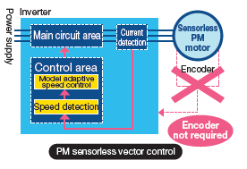
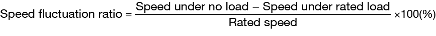
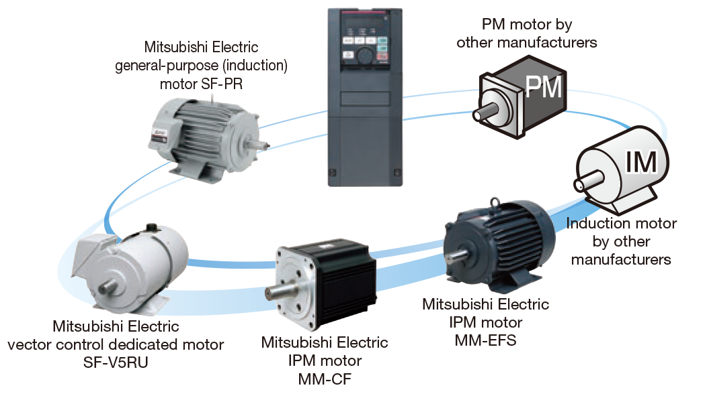
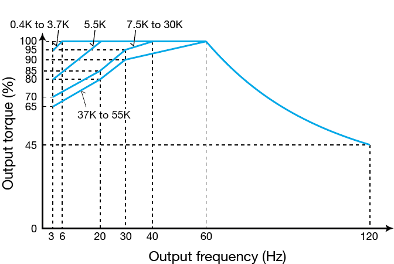
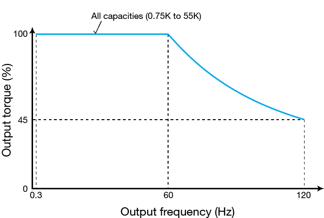
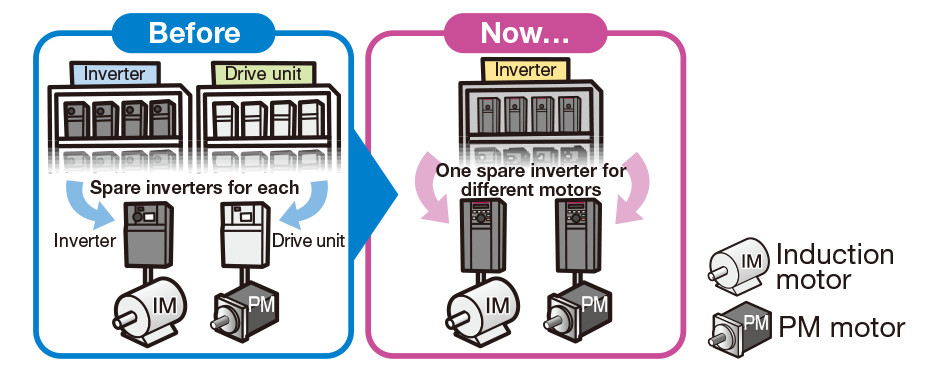

Seri Inverters-FREQROL FR-A800 PENDEKATAN UNTUK KINERJA PENGGERAK TERKEMUKA

PENDEKATAN TERHADAP KINERJA PENGGERAK
TERKEMUKA
Seri baru ini dilengkapi dengan prosesor berkecepatan tinggi canggih yang dikembangkan oleh Mitsubishi Electric. Dengan kinerja kontrol dan tingkat respons yang lebih baik, pengoperasian yang aman dan akurat terjamin dalam berbagai aplikasi.
Kontrol vektor tanpa sensor Real dan kontrol vektor yang disempurnakan melayani kebutuhan semua jenis mesin.
Kontrol vektor tersedia saat opsi yang kompatibel dengan kontrol vektor dipasang.
Untuk produk berkualitas tinggi
Respons tinggi
Kecepatan respons
Kontrol vektor tanpa sensor riil 50 Hz*1 ［A700：20Hz］
Kontrol vektor 130 Hz*2 ［A700：50Hz］
- *1Pada 3,7 kW tanpa beban. Berbeda tergantung pada kondisi beban dan kapasitas motor.
-
*2Opsi (FR-A8AP, FR-A8AL, atau FR-A8TP) diperlukan.
Respons kecepatan: Respons kecepatan menunjukkan seberapa cepat inverter mengikuti perubahan pada perintah kecepatan. (Nilai yang lebih besar menunjukkan keterlacakan kecepatan yang lebih baik.)
Kontrol garis
Kontrol garis diperlukan untuk pemesinan produk memanjang seperti kertas, benang, kawat, semua jenis lembaran, dan pita. Ini akan merespons perubahan kecepatan garis dengan cepat dan menekan terjadinya ketidakrataan lilitan. Ini berkontribusi pada pasokan produk berkualitas tinggi yang stabil.
Lakukan pemrosesan ultra-halus
Rotasi kecepatan tinggi
Frekuensi pengoperasian
Kontrol vektor tanpa sensor nyata dan kontrol vektor 400Hz ［A700：120Hz］
Kontrol V/F 590Hz*3 ［A700：400Hz］
*3Berdasarkan hasil peninjauan perintah pengendalian ekspor tentang pengubah frekuensi, batas atas frekuensi keluaran ditetapkan sebesar 590 Hz untuk model standar.
Perkakas mesin
Perkakas mesin mutakhir kini lebih keras dan tipis dari sebelumnya sehingga dapat diaplikasikan pada beragam material baru.
Rotasi berkecepatan tinggi lebih dibutuhkan dari sebelumnya agar dapat diaplikasikan untuk pemotongan halus dan presisi pada material keras dan sulit diasah.
Pindahkan beban berat dengan cepat
Torsi tinggi pada kecepatan rendah
Torsi awal (Saat pada 0,3 Hz)
Kontrol vektor tanpa sensor nyata 200% (peringkat ND)*4, Kontrol vektor 200% (peringkat ND)*4 (150% dari pengaturan awal untuk 5,5K dan lebih tinggi)
Torsi kecepatan nol
Kontrol vektor 200%. (Pilih rating HD.)*4
Rentang kontrol kecepatan
Kontrol V/F 1:10 (6 hingga 60 Hz: Mengemudi)
Kontrol vektor fluks magnetik canggih 1:120 (0,5 hingga 60 Hz: Mengemudi)
Kontrol vektor tanpa sensor nyata 1:200 (0,3 hingga 60 Hz: Mengemudi)
Kontrol vektor 1:1500 (1 hingga 1500 putaran/menit: Mengemudi/regenerasi)
*4Lihat disini untuk pengaturan pemeringkatan ganda.
Derek
Derek beroperasi setiap hari di pelabuhan mengangkut peti kemas bermuatan penuh sebagai respons atas tingginya permintaan dari seluruh dunia. Inverter baru kami mewujudkan pekerjaan penanganan kargo yang lancar pada kecepatan rendah dan torsi tinggi untuk gerakan lambat dan stabil yang dibutuhkan untuk benda berat.
Untuk transportasi yang akurat dan stabil antar mesin
Pengendalian vektor tanpa sensor PM
- ●Apa itu motor magnet permanen (PM)?
- Motor PM adalah motor sinkron dengan magnet permanen yang kuat tertanam di rotornya. Dua jenis motor PM utama adalah: motor magnet permanen interior (IPM) dengan magnetnya tertanam di dalam rotor, dan motor magnet permanen permukaan (SPM) dengan magnet permanennya terpasang di permukaan rotor.
- ●Apa itu kontrol vektor tanpa sensor PM?
-
Kecepatan dan posisi kutub magnet, dua bit informasi penting untuk mengendalikan motor PM, dideteksi tanpa sensor (encoder). Deteksi kecepatan yang dilakukan secara internal dalam inverter memungkinkan kontrol motor PM yang sangat akurat, hampir seakurat sistem servo AC, tanpa memerlukan sensor (encoder)*5.
Penggabungan dengan motor IPM seri MM-CF Mitsubishi Electric memfasilitasi aspek kontrol tingkat tinggi tanpa encoder seperti "pemosisian sederhana"*6 dan "torsi kecepatan nol".*5Rasio fluktuasi kecepatan: ±0,05% (input digital)
*6Akurasi posisi (tanpa beban) 1,5K dan lebih rendah: ±1,8°, 2K dan lebih tinggi: ±3,6°
- ●Perawatan mudah untuk motor tanpa sensor (encoder)
-
- Tidak ada kabel tambahan berarti lebih sedikit ruang kabel yang dibutuhkan.
- Keandalan yang lebih baik diperoleh dalam lingkungan operasi yang tidak menguntungkan. (misalnya getaran tinggi)
- Motor PM biasanya lebih kecil dan lebih ringan daripada motor induksi.
Pemindahan papan sirkuit
Kontrol pemosisian Sederhana memberikan benda kerja presisi, seperti substrat cetak, ke posisi yang tepat.
Pemindahan substrat kaca yang rapuh dapat dilakukan dengan sistem penggerak yang sangat akurat.
Meningkatkan kinerja motor secara maksimal
Motor induksi dan motor magnet dapat dikombinasikan secara bebas
- ●Fungsi penyetelan otomatis yang canggih
-
Fungsi penyetelan otomatis motor PM, yang baru dikembangkan, memungkinkan pengoperasian tanpa sensor pada motor magnet permanen (PM) dari produsen lain.
Pengoperasian dengan semua motor induksi Mitsubishi Electric dan motor PM, selain motor induksi dan motor PM dari produsen lain*7, dimungkinkan. Artinya, Anda memerlukan lebih sedikit motor untuk suku cadang dan stok.
(Dengan motor IPM selain motor MM-CF dan PM yang diproduksi oleh perusahaan lain, torsi awal dibatasi hingga 50%, dan kontrol posisi sederhana serta torsi kecepatan nol tidak dapat digunakan meskipun telah disetel.)*7Penyetelan mungkin tidak tersedia tergantung pada karakteristik motornya.
 - ●Kecepatan rendah, torsi tinggi terwujud dengan motor SF-PR
-
Dengan menggabungkan motor SF-PR Mitsubishi Electric yang hemat energi dan berkinerja tinggi, pengoperasian berkelanjutan 100% dapat dilakukan dari kecepatan rendah 0,3 Hz untuk inverter dengan kapasitas apa pun.
(saat menggunakan kontrol vektor tanpa sensor Real)
Karakteristik torsi operasi berkelanjutan SF-JR
(Tegangan masukan motor: 200 V)Karakteristik torsi operasi berkelanjutan SF-PR
(Tegangan masukan motor: 200 V) - ●Berbagi inverter cadangan
-
Satu inverter cadangan cukup untuk dua jenis motor (IM dan PM).
